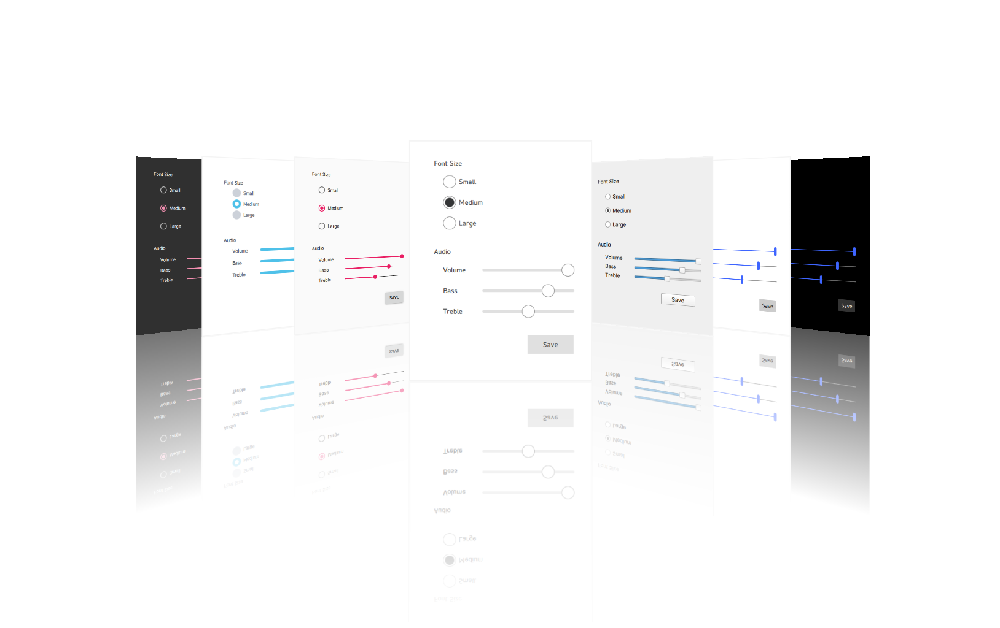

Qt Quick Controls
Qt Quick Controls provides a set of controls that can be used to build complete interfaces in Qt Quick. The module was introduced in Qt 5.7.

Qt Quick Controls comes with a selection customizable styles. See Styling Qt Quick Controls for more details.
Using the Module
QML API
The QML types can be imported into your application using the following import statement in your .qml file:
import QtQuick.Controls
C++ API
Using the C++ API requires linking against the module library, either directly or through other dependencies. Several build tools have dedicated support for this, including CMake and qmake.
Building with CMake
Use the find_package() command to locate the needed module components in the Qt6 package:
find_package(Qt6 REQUIRED COMPONENTS QuickControls2) target_link_libraries(mytarget PRIVATE Qt6::QuickControls2)
See also the Build with CMake overview.
Building with qmake
To configure the module for building with qmake, add the module as a value of the QT variable in the project's .pro file:
QT += quickcontrols2
Building From Source
The Qt Image Formats module is recommended, but not required. It provides support for the .webp format used by the Imagine style.
Versions
Qt Quick Controls 2.0 was introduced in Qt 5.7. Subsequent minor Qt releases increment the import version of the Qt Quick Controls modules by one, until Qt 5.12, where the import versions match Qt's minor version.
In Qt 6, both the major and minor versions match, and version numbers may be omitted from imports in QML. If the version is omitted, the latest version will be used.
The experimental Qt Labs modules use import version 1.0.
Qt | QtQuick | QtQuick.Controls,QtQuick.Controls.Material,QtQuick.Controls.Universal,QtQuick.Templates | Qt.labs.platform |
|---|---|---|---|
| 5.7 | 2.7 | 2.0 | 1.0 |
| 5.8 | 2.8 | 2.1 | 1.0 |
| 5.9 | 2.9 | 2.2 | 1.0 |
| 5.10 | 2.10 | 2.3 | 1.0 |
| 5.11 | 2.11 | 2.4 | 1.0 |
| 5.12 | 2.12 | 2.12 | 1.0 |
| 6.0 | 6.0 | 6.0 | 1.0 |
| ... | ... | ... | ... |
Module Evolution
Changes to Qt Quick Controls lists important changes in the module API and functionality that were done for the Qt 6 series of Qt.
License and Attributions
Qt Quick Controls is available under commercial licenses from The Qt Company. In addition, it is available under the GNU Lesser General Public License, version 3, or the GNU General Public License, version 2. See Qt Licensing for further details.
Furthermore Qt Quick Controls potentially contains third party modules under following permissive licenses:
MIT License |
Topics
- Getting Started
- Guidelines
- Styling
- Icons
- Customization
- Using File Selectors
- Deployment
- Configuration File
- Environment Variables
Reference
Examples
- Gallery
- Chat Tutorial
- Text Editor
- Wearable Demo
- Automotive Example
- Music Player Example
- All Examples